Activity: Convert a part to sheet metal
Click here to download the activity file.
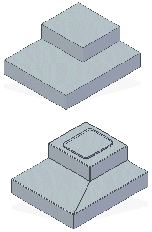
Objectives
This activity demonstrates how to a part model to sheet metal and then add features to the sheet metal model. In this activity you will:
Select linear edges to define bends for the sheet metal part.
Add a dimple to the new sheet metal feature.
Start Solid Edge 2023.
Open convert_part_activity_01.par.
Select the Tools→Transform→Part to Sheet Metal command  .
.
If the Part to Sheet Metal Options dialog box is displayed, click Cancel.
Select the eight highlighted linear edges to create bends for the new sheet metal part.
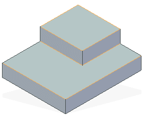
As you select the edges, the edges that must be ripped and the coplanar edges are automatically ripped.
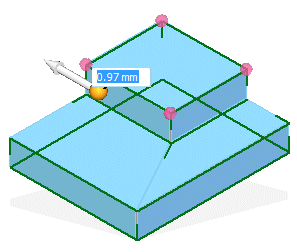
Click the bend icon.
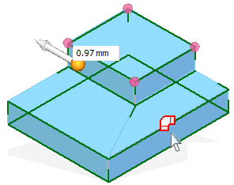
Type 1.00 for the new Bend Radius.
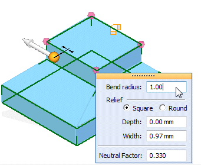
Click the corner treatment sphere.
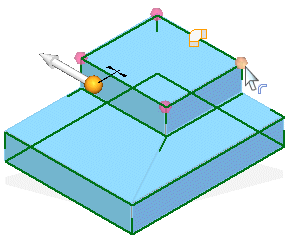
Select the Open corner treatment.
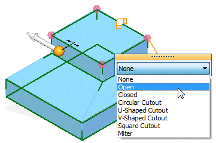
Right-click to accept the change.
Right-click to convert the part.
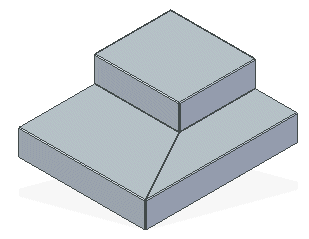
In PathFinder, display the sketch named Dimple.
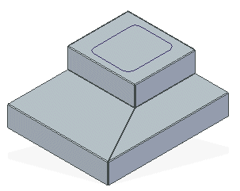
Click the Home→Sheet Metal→Dimple command .
On the Dimple command bar, set the Create From option to Select from Sketch.
Select the sketch shown and click Accept.
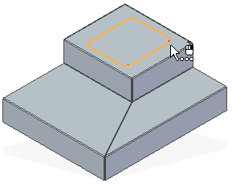
Enter a distance of 5.00 mm and position the mouse above the model as shown
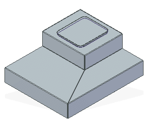
Click Finish. The dimple is created.
In this lesson you converted an ordered part model into a sheet metal model. You modified the bend radius where needed and then used the cutout command and the break corner command to finish the model. Once converted you added sheet metal features to the model just as if it was originally created in sheet metal.
Answer the following questions:
What three commands can you use to convert a part to sheet metal?
What input is required for the Part to Sheet Metal command?